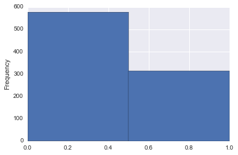
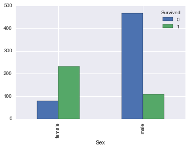
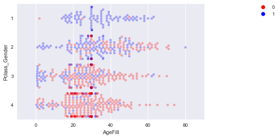
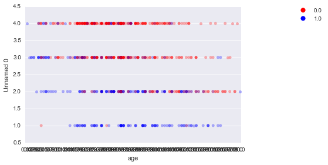
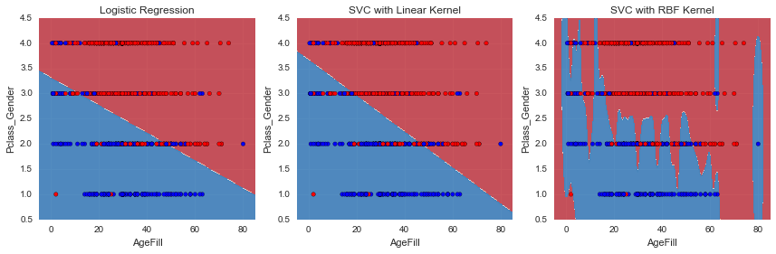
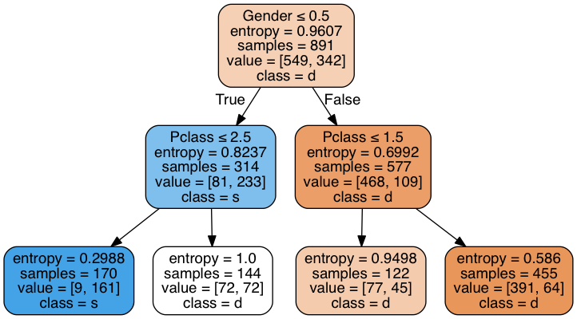

PyData Tokyo tutorial Machine Learning¶
アジェンダ¶
- バックグラウンド
- ライブラリのインポートとデータの準備
- ジェンダーモデルによる生存者推定、推定値の評価
- ロジスティック回帰による生存者推定
- 交差検証（クロスバリデーション）
- 決定木（Decision Tree）による生存者推定
- グリッドサーチ
In [1]:
import numpy as np
import pandas as pd
import matplotlib.pyplot as plt
import seaborn as sns
%matplotlib inline
In [2]:
from sklearn.metrics import (
accuracy_score,
classification_report,
confusion_matrix
)
from sklearn.cross_validation import (
train_test_split,
cross_val_score,
KFold
)
from sklearn.preprocessing import LabelEncoder
from sklearn.linear_model import LogisticRegression
from sklearn.svm import SVC
from sklearn.tree import (
DecisionTreeClassifier,
export_graphviz
)
from sklearn.grid_search import GridSearchCV
from matplotlib.colors import ListedColormap
from IPython.display import Image
In [439]:
def estimated_params(estimator):
return [a for a in dir(estimator) if a.endswith("_") and not a.startswith("_")]
In [3]:
df_train = pd.read_csv('titanic/train.csv')
df_test = pd.read_csv('titanic/test.csv')
In [4]:
df_train.tail(1)
Out[4]:
| PassengerId | Survived | Pclass | Name | Sex | Age | SibSp | Parch | Ticket | Fare | Cabin | Embarked | |
|---|---|---|---|---|---|---|---|---|---|---|---|---|
| 890 | 891 | 0 | 3 | Dooley, Mr. Patrick | male | 32.0 | 0 | 0 | 370376 | 7.75 | NaN | Q |
In [5]:
df_train.describe(include="all", percentiles=[0.05] + list(np.linspace(0.1, 0.9, 9)) + [0.95])
Out[5]:
| PassengerId | Survived | Pclass | Name | Sex | Age | SibSp | Parch | Ticket | Fare | Cabin | Embarked | |
|---|---|---|---|---|---|---|---|---|---|---|---|---|
| count | 891.000000 | 891.000000 | 891.000000 | 891 | 891 | 714.000000 | 891.000000 | 891.000000 | 891 | 891.000000 | 204 | 889 |
| unique | NaN | NaN | NaN | 891 | 2 | NaN | NaN | NaN | 681 | NaN | 147 | 3 |
| top | NaN | NaN | NaN | Kilgannon, Mr. Thomas J | male | NaN | NaN | NaN | CA. 2343 | NaN | C23 C25 C27 | S |
| freq | NaN | NaN | NaN | 1 | 577 | NaN | NaN | NaN | 7 | NaN | 4 | 644 |
| mean | 446.000000 | 0.383838 | 2.308642 | NaN | NaN | 29.699118 | 0.523008 | 0.381594 | NaN | 32.204208 | NaN | NaN |
| std | 257.353842 | 0.486592 | 0.836071 | NaN | NaN | 14.526497 | 1.102743 | 0.806057 | NaN | 49.693429 | NaN | NaN |
| min | 1.000000 | 0.000000 | 1.000000 | NaN | NaN | 0.420000 | 0.000000 | 0.000000 | NaN | 0.000000 | NaN | NaN |
| 5% | 45.500000 | 0.000000 | 1.000000 | NaN | NaN | 4.000000 | 0.000000 | 0.000000 | NaN | 7.225000 | NaN | NaN |
| 10% | 90.000000 | 0.000000 | 1.000000 | NaN | NaN | 14.000000 | 0.000000 | 0.000000 | NaN | 7.550000 | NaN | NaN |
| 20% | 179.000000 | 0.000000 | 1.000000 | NaN | NaN | 19.000000 | 0.000000 | 0.000000 | NaN | 7.854200 | NaN | NaN |
| 30.0% | 268.000000 | 0.000000 | 2.000000 | NaN | NaN | 22.000000 | 0.000000 | 0.000000 | NaN | 8.050000 | NaN | NaN |
| 40% | 357.000000 | 0.000000 | 2.000000 | NaN | NaN | 25.000000 | 0.000000 | 0.000000 | NaN | 10.500000 | NaN | NaN |
| 50% | 446.000000 | 0.000000 | 3.000000 | NaN | NaN | 28.000000 | 0.000000 | 0.000000 | NaN | 14.454200 | NaN | NaN |
| 60% | 535.000000 | 0.000000 | 3.000000 | NaN | NaN | 31.800000 | 0.000000 | 0.000000 | NaN | 21.679200 | NaN | NaN |
| 70% | 624.000000 | 1.000000 | 3.000000 | NaN | NaN | 36.000000 | 1.000000 | 0.000000 | NaN | 27.000000 | NaN | NaN |
| 80% | 713.000000 | 1.000000 | 3.000000 | NaN | NaN | 41.000000 | 1.000000 | 1.000000 | NaN | 39.687500 | NaN | NaN |
| 90% | 802.000000 | 1.000000 | 3.000000 | NaN | NaN | 50.000000 | 1.000000 | 2.000000 | NaN | 77.958300 | NaN | NaN |
| 95% | 846.500000 | 1.000000 | 3.000000 | NaN | NaN | 56.000000 | 3.000000 | 2.000000 | NaN | 112.079150 | NaN | NaN |
| max | 891.000000 | 1.000000 | 3.000000 | NaN | NaN | 80.000000 | 8.000000 | 6.000000 | NaN | 512.329200 | NaN | NaN |
変数概要¶
- PassengerId: 乗客ID
- Survived: 1 = 生き残り 0 = 死亡
- Pclass: 等級
- Name: 名前
- Sex: 性別
- Age: 年齢
- Parch: 子供の数
- Ticket: チケット番号
- Fare: 運賃
- Cabin: 部屋番号
- Embarked: 乗船地
わかったこと¶
- 891レコード
- 70%が死んだ
- 半分が３階級
- 年齢に欠損値多少有り
- Cabinに欠損値が多い(そもそも部屋番号は関係なさそう)
In [6]:
df_test.tail(1)
Out[6]:
| PassengerId | Pclass | Name | Sex | Age | SibSp | Parch | Ticket | Fare | Cabin | Embarked | |
|---|---|---|---|---|---|---|---|---|---|---|---|
| 417 | 1309 | 3 | Peter, Master. Michael J | male | NaN | 1 | 1 | 2668 | 22.3583 | NaN | C |
In [7]:
sex = {val:idx for idx, val in enumerate(df_train["Sex"].unique())}
sex
Out[7]:
{'female': 1, 'male': 0}
In [8]:
s_sex = df_train["Sex"].map(sex)
s_sex.plot.hist(bins=2)
Out[8]:
<matplotlib.axes._subplots.AxesSubplot at 0x1179ba2e8>

In [9]:
df_train["Survived"].value_counts().plot.bar()
Out[9]:
<matplotlib.axes._subplots.AxesSubplot at 0x104517828>

In [10]:
df_train.pivot_table(index="Sex", columns="Survived", values="PassengerId", aggfunc=len).plot.bar()
Out[10]:
<matplotlib.axes._subplots.AxesSubplot at 0x1178ff518>

In [11]:
fig, axes = plt.subplots(1, 2, figsize=(16, 4))
axes[0].hist([df_train[(df_train["Sex"] == "female") & (df_train["Survived"] == 0)]["Age"],
df_train[(df_train["Sex"] == "female") & (df_train["Survived"] == 1)]["Age"]],
bins=10 , stacked=True, range=(1, 80))
axes[1].hist([df_train[(df_train.Survived==0) & (df_train.Sex=='male')]['Age'],
df_train[(df_train.Survived==1) & (df_train.Sex=='male')]['Age']],
alpha=0.6, range=(1,80), bins=10, stacked=True,
label=('Died', 'Survived'))
Out[11]:
([array([ 11., 18., 99., 88., 60., 37., 23., 14., 9., 1.]),
array([ 23., 23., 110., 117., 73., 46., 29., 16., 9., 2.])],
array([ 1. , 8.9, 16.8, 24.7, 32.6, 40.5, 48.4, 56.3, 64.2,
72.1, 80. ]),
<a list of 2 Lists of Patches objects>)

ジェンダーモデルによる生存者推定、推定値の評価¶
In [12]:
x = df_train['Sex']
y = df_train['Survived']
y_pred = x.map({'female': 1, 'male': 0}).astype(int)
In [13]:
pd.concat([y.head(), y_pred.head()], axis=1)
Out[13]:
| Survived | Sex | |
|---|---|---|
| 0 | 0 | 0 |
| 1 | 1 | 1 |
| 2 | 1 | 1 |
| 3 | 1 | 1 |
| 4 | 0 | 0 |
In [14]:
accuracy_score(
[1, 0, 1, 0, 0],
[0, 0, 1, 1, 1])
Out[14]:
0.40000000000000002
In [15]:
accuracy_score(y, y_pred)
Out[15]:
0.78675645342312006
In [16]:
print(classification_report(y, y_pred))
precision recall f1-score support
0 0.81 0.85 0.83 549
1 0.74 0.68 0.71 342
avg / total 0.78 0.79 0.78 891
In [17]:
cm = confusion_matrix(y, y_pred)
# True, Predict
cm_df = pd.DataFrame(cm, index=["T(0)", "T(1)"], columns=["P(0)", "P(1)"])
cm_df
Out[17]:
| P(0) | P(1) | |
|---|---|---|
| T(0) | 468 | 81 |
| T(1) | 109 | 233 |
In [19]:
cm_df.ix["T(0)"]["P(0)"] / cm_df.ix["T(0)"]["P(0)"]
Out[19]:
1.0
In [20]:
def plot_confusion_matrix(cm):
fig, ax = plt.subplots()
im = ax.imshow(cm, interpolation='nearest', cmap=plt.cm.Blues)
#ax.set_title('Confusion Matrix')
fig.colorbar(im)
target_names = ['not survived', 'survived']
tick_marks = np.arange(len(target_names))
ax.set_xticks(tick_marks)
ax.set_xticklabels(target_names, rotation=45)
ax.set_yticks(tick_marks)
ax.set_yticklabels(target_names)
ax.set_ylabel('True label')
ax.set_xlabel('Predicted label')
fig.tight_layout()
plot_confusion_matrix(cm)

作成したkaggle_gendermodel.csvをKaggleに投稿し、スコアと順位を確認してみましょう！これで皆さんもKagglerです！¶
In [21]:
x_test = df_test['Sex']
y_test_pred = x_test.map({'female': 1, 'male': 0}).astype(int)
In [22]:
df_kaggle = pd.DataFrame({'PassengerId': df_test['PassengerId'], 'Survived':np.array(y_test_pred)})
df_kaggle.to_csv('titanic/kaggle_gendermodel.csv', index=False)
df_kaggle.tail()
Out[22]:
| PassengerId | Survived | |
|---|---|---|
| 413 | 1305 | 0 |
| 414 | 1306 | 1 |
| 415 | 1307 | 0 |
| 416 | 1308 | 0 |
| 417 | 1309 | 0 |
ロジスティック回帰による生存者推定¶
In [23]:
iris = sns.load_dataset("iris")
iris2 = iris[["sepal_length", "sepal_width"]].copy()
iris2 = iris.loc[: , ("sepal_length", "sepal_width")]
iris2["lenght_2x"] = iris2["sepal_length"] * 2
In [24]:
pd.options.mode.chained_assignment
Out[24]:
'warn'
In [25]:
X = df_train[['Age', 'Pclass', 'Sex']].copy()
y = df_train['Survived']
In [26]:
X['AgeFill'] = X['Age'].fillna(X['Age'].mean())
In [27]:
X['AgeFill'] = X['Age'].fillna(X['Age'].mean())
X['Gender'] = X['Sex'].map({'female': 0, 'male': 1}).astype(int)
X['Pclass_Gender'] = X['Pclass'] + X['Gender']
X.tail()
Out[27]:
| Age | Pclass | Sex | AgeFill | Gender | Pclass_Gender | |
|---|---|---|---|---|---|---|
| 886 | 27.0 | 2 | male | 27.000000 | 1 | 3 |
| 887 | 19.0 | 1 | female | 19.000000 | 0 | 1 |
| 888 | NaN | 3 | female | 29.699118 | 0 | 3 |
| 889 | 26.0 | 1 | male | 26.000000 | 1 | 2 |
| 890 | 32.0 | 3 | male | 32.000000 | 1 | 4 |
In [28]:
X = X.drop(['Age'], axis=1)
X = X.drop(['Pclass', 'Sex', 'Gender'], axis=1)
X.tail()
Out[28]:
| AgeFill | Pclass_Gender | |
|---|---|---|
| 886 | 27.000000 | 3 |
| 887 | 19.000000 | 1 |
| 888 | 29.699118 | 3 |
| 889 | 26.000000 | 2 |
| 890 | 32.000000 | 4 |
In [29]:
np.random.seed(0)
xmin, xmax = -5, 85
ymin, ymax = 0.5, 4.5
index_survived = y[y==0].index
index_notsurvived = y[y==1].index
fig, ax = plt.subplots()
cm = plt.cm.RdBu
cm_bright = ListedColormap(['#FF0000', '#0000FF'])
sc = ax.scatter(X.loc[index_survived, 'AgeFill'],
X.loc[index_survived, 'Pclass_Gender']+(np.random.rand(len(index_survived))-0.5)*0.1,
color='r', label='Not Survived', alpha=0.3)
sc = ax.scatter(X.loc[index_notsurvived, 'AgeFill'],
X.loc[index_notsurvived, 'Pclass_Gender']+(np.random.rand(len(index_notsurvived))-0.5)*0.1,
color='b', label='Survived', alpha=0.3)
ax.set_xlabel('AgeFill')
ax.set_ylabel('Pclass_Gender')
ax.set_xlim(xmin, xmax)
ax.set_ylim(ymin, ymax)
ax.legend(bbox_to_anchor=(1.4, 1.03))
Out[29]:
<matplotlib.legend.Legend at 0x11ac4d518>

In [30]:
_sc_test = X.copy()
_sc_test.Pclass_Gender = _sc_test.Pclass_Gender.astype("category")
_sc_test["y"] = y
sns.swarmplot(x="AgeFill", y="Pclass_Gender", hue="y", data=_sc_test, alpha=0.3, palette=["red", "blue"])
plt.legend(bbox_to_anchor=(1.4, 1.03))
plt.tight_layout()

In [94]:
titanic = sns.load_dataset("titanic")
_titanic = pd.DataFrame(
[
titanic.age.fillna(titanic.age.mean()),
titanic.pclass + titanic.sex.map({'female': 0, 'male': 1}).astype(int),
titanic.survived
]).T
#_titanic["Unnamed 0"] = _titanic["Unnamed 0"].astype("category")
#_titanic["Unnamed 0"] = _titanic["Unnamed 0"].astype("category", categories=[4,3,2,1], ordered=False)
#sns.swarmplot(
sns.stripplot(jitter=0.1,
data=_titanic, x="age", y="Unnamed 0", hue="survived",
alpha=0.3, palette=["red", "blue"])
plt.legend(bbox_to_anchor=(1.4, 1.03))
plt.tight_layout()

トレーニングデータの分割¶
In [32]:
X_train, X_val, y_train, y_val = train_test_split(X, y, train_size=0.8, random_state=1)
In [33]:
X_train.tail().T
Out[33]:
| 715 | 767 | 72 | 235 | 37 | |
|---|---|---|---|---|---|
| AgeFill | 19.0 | 30.5 | 21.0 | 29.699118 | 21.0 |
| Pclass_Gender | 4.0 | 3.0 | 3.0 | 3.000000 | 4.0 |
In [34]:
print('Num of Training Samples: {}'.format(len(X_train)))
print('Num of Validation Samples: {}'.format(len(X_val)))
Num of Training Samples: 712
Num of Validation Samples: 179
ロジスティック回帰による推定¶
In [441]:
# 学習
clf = LogisticRegression()
clf.fit(X_train, y_train)
Out[441]:
LogisticRegression(C=1.0, class_weight=None, dual=False, fit_intercept=True,
intercept_scaling=1, max_iter=100, multi_class='ovr', n_jobs=1,
penalty='l2', random_state=None, solver='liblinear', tol=0.0001,
verbose=0, warm_start=False)
In [442]:
estimated_params(clf)
Out[442]:
['classes_', 'coef_', 'intercept_', 'n_iter_']
In [443]:
clf.coef_, clf.intercept_
Out[443]:
(array([[-0.03756041, -1.29748813]]), array([ 4.30808898]))
In [444]:
clf.classes_, clf.n_iter_
Out[444]:
(array([0, 1]), array([11], dtype=int32))
In [36]:
y_train_pred = clf.predict(X_train)
y_val_pred = clf.predict(X_val)
print('Accuracy on Training Set: {:.3f}'.format(accuracy_score(y_train, y_train_pred)))
print('Accuracy on Validation Set: {:.3f}'.format(accuracy_score(y_val, y_val_pred)))
Accuracy on Training Set: 0.774
Accuracy on Validation Set: 0.760
In [37]:
cm = confusion_matrix(y_val, y_val_pred)
print(cm)
[[93 13]
[30 43]]
In [38]:
print(classification_report(y_val, y_val_pred))
precision recall f1-score support
0 0.76 0.88 0.81 106
1 0.77 0.59 0.67 73
avg / total 0.76 0.76 0.75 179
In [39]:
X_val
1
Out[39]:
1
In [95]:
h = 0.02
xmin, xmax = -5, 85
ymin, ymax = 0.5, 4.5
xx, yy = np.meshgrid(np.arange(xmin, xmax, h), np.arange(ymin, ymax, h))
Z = clf.predict_proba(np.c_[xx.ravel(), yy.ravel()])[:, 1]
Z = Z.reshape(xx.shape)
levels = np.linspace(0, 1.0, 5)
cm = plt.cm.RdBu
cm_bright = ListedColormap(['#FF0000', '#0000FF'])
ax = sns.stripplot(jitter=0.1,
data=_titanic,
x="age", y="Unnamed 0", hue="survived",
alpha=0.5, palette=["red", "blue"])
contour = ax.contourf(xx, yy, Z, cmap=cm, levels=levels, alpha=0.8)
fig.colorbar(contour)
Out[95]:
<matplotlib.colorbar.Colorbar at 0x11e126ef0>

In [60]:
h = 0.02
xmin, xmax = -5, 85
ymin, ymax = 0.5, 4.5
xx, yy = np.meshgrid(np.arange(xmin, xmax, h), np.arange(ymin, ymax, h))
Z = clf.predict_proba(np.c_[xx.ravel(), yy.ravel()])[:, 1]
Z = Z.reshape(xx.shape)
fig, ax = plt.subplots(figsize=(14, 6))
levels = np.linspace(0, 1.0, 5)
cm = plt.cm.RdBu
cm_bright = ListedColormap(['#FF0000', '#0000FF'])
contour = ax.contourf(xx, yy, Z, cmap=cm, levels=levels, alpha=0.8)
ax.scatter(X_train.iloc[:, 0], X_train.iloc[:, 1]+(np.random.rand(len(X_train))-0.5)*0.1, c=y_train, cmap=cm_bright)
ax.scatter(X_val.iloc[:, 0], X_val.iloc[:, 1]+(np.random.rand(len(X_val))-0.5)*0.1, c=y_val, cmap=cm_bright, alpha=0.5)
ax.set_xlabel('AgeFill')
ax.set_ylabel('Pclass_Gender')
ax.set_xlim(xmin, xmax)
ax.set_ylim(ymin, ymax)
fig.colorbar(contour)
x1 = xmin
x2 = xmax
y1 = -1*(clf.intercept_[0]+clf.coef_[0][0]*xmin)/clf.coef_[0][1]
y2 = -1*(clf.intercept_[0]+clf.coef_[0][0]*xmax)/clf.coef_[0][1]
ax.plot([xmin, xmax] ,[y1, y2], 'k--')
Out[60]:
[<matplotlib.lines.Line2D at 0x123109b70>]

In [96]:
clf_log = LogisticRegression()
clf_svc_lin = SVC(kernel='linear', probability=True)
clf_svc_rbf = SVC(kernel='rbf', probability=True)
titles = ['Logistic Regression', 'SVC with Linear Kernel', 'SVC with RBF Kernel',]
h = 0.02
xmin, xmax = -5, 85
ymin, ymax = 0.5, 4.5
xx, yy = np.meshgrid(np.arange(xmin, xmax, h), np.arange(ymin, ymax, h))
fig, axes = plt.subplots(1, 3, figsize=(12,4))
levels = np.linspace(0, 1.0, 5)
cm = plt.cm.RdBu
cm_bright = ListedColormap(['#FF0000', '#0000FF'])
for i, clf in enumerate((clf_log, clf_svc_lin, clf_svc_rbf)):
clf.fit(X, y)
Z = clf.predict(np.c_[xx.ravel(), yy.ravel()])
Z = Z.reshape(xx.shape)
axes[i].contourf(xx, yy, Z, cmap=cm, levels=levels, alpha=0.8)
axes[i].scatter(X.iloc[:, 0], X.iloc[:, 1], c=y, cmap=cm_bright)
axes[i].set_title(titles[i])
axes[i].set_xlabel('AgeFill')
axes[i].set_ylabel('Pclass_Gender')
axes[i].set_xlim(xmin, xmax)
axes[i].set_ylim(ymin, ymax)
fig.tight_layout()

over fitting¶
In [446]:
clf = SVC(kernel='rbf', probability=True)
clf.fit(X_train, y_train)
y_train_pred = clf.predict(X_train)
y_val_pred = clf.predict(X_val)
accuracy_score(y_train, y_train_pred), accuracy_score(y_val, y_val_pred)
Out[446]:
(0.80758426966292129, 0.7988826815642458)
In [447]:
estimated_params(clf)
Out[447]:
['class_weight_',
'classes_',
'coef_',
'dual_coef_',
'fit_status_',
'intercept_',
'n_support_',
'probA_',
'probB_',
'shape_fit_',
'support_',
'support_vectors_']
cross validation¶
In [98]:
X_train, X_val, y_train, y_val = train_test_split(X, y, train_size=0.8, random_state=33)
clf = LogisticRegression()
clf.fit(X_train, y_train)
y_train_pred = clf.predict(X_train)
y_val_pred = clf.predict(X_val)
accuracy_score(y_train, y_train_pred), accuracy_score(y_val, y_val_pred)
Out[98]:
(0.7837078651685393, 0.74301675977653636)
In [100]:
def cross_val(clf, X, y, K, random_state=0):
cv = KFold(len(y), K, shuffle=True, random_state=random_state)
scores = cross_val_score(clf, X, y, cv=cv)
return scores
In [101]:
clf = LogisticRegression()
scores = cross_val(clf, X, y, 5)
print('Scores:', scores)
print('Mean Score: {0:.3f} (+/-{1:.3f})'.format(scores.mean(), scores.std()*2))
Scores: [ 0.80446927 0.74719101 0.80337079 0.74719101 0.76966292]
Mean Score: 0.774 (+/-0.051)
In [137]:
(train_test_split([1,2,3,4], [5,6,7,8], train_size=0.5))
Out[137]:
[[3, 2], [4, 1], [7, 6], [8, 5]]
In [117]:
(train_test_split([1,2,3,4], [5,6,7,8], train_size=0.5, random_state=33))
Out[117]:
[[4, 1], [2, 3], [8, 5], [6, 7]]
In [198]:
shuffled = np.array(range(9))
np.random.shuffle(shuffled)
shuffled
Out[198]:
array([7, 3, 1, 5, 4, 8, 2, 0, 6])
In [219]:
random_state = np.random.RandomState(seed=0)
random_state.shuffle(shuffled)
shuffled
Out[219]:
array([0, 1, 3, 4, 6, 2, 5, 7, 8])
In [221]:
# http://scikit-learn.org/stable/modules/generated/sklearn.cross_validation.KFold.html
KFold(len(y), 5, shuffle=True, random_state=random_state)
Out[221]:
sklearn.cross_validation.KFold(n=891, n_folds=5, shuffle=True, random_state=<mtrand.RandomState object at 0x1201d8438>)
In [223]:
# http://scikit-learn.org/stable/modules/cross_validation.html
# http://scikit-learn.org/stable/modules/generated/sklearn.cross_validation.cross_val_score.html
cross_val_score(LogisticRegression(), X, y, cv=5)
Out[223]:
array([ 0.7150838 , 0.75418994, 0.82022472, 0.79213483, 0.79661017])
In [238]:
kf = KFold(len(y), 5, shuffle=True, random_state=random_state)
print(kf, "\n")
for i, (kf_train, kf_test) in enumerate(kf):
print(i)
print(kf_train)
print(kf_test)
sklearn.cross_validation.KFold(n=891, n_folds=5, shuffle=True, random_state=<mtrand.RandomState object at 0x1201d8438>)
0
[ 0 1 2 3 5 6 8 9 10 11 12 13 14 15 17 19 20 21
23 25 26 27 28 29 32 34 35 36 39 40 41 42 43 44 47 48
49 51 52 53 54 55 56 57 58 59 60 62 65 68 69 71 73 74
75 77 78 79 80 81 82 84 86 87 88 89 90 92 93 94 97 98
99 100 101 102 103 106 107 108 109 110 113 114 115 116 117 119 120 122
123 124 125 127 128 129 130 131 132 133 135 136 137 138 139 140 141 142
143 144 145 146 147 148 149 150 151 152 153 155 156 157 158 159 160 161
162 163 164 165 166 167 168 169 170 171 174 175 176 180 182 183 185 186
187 188 189 190 191 192 193 194 196 197 198 199 200 202 203 205 206 207
211 212 213 214 215 216 217 218 219 220 222 223 224 225 226 228 229 230
231 232 233 234 235 236 238 239 240 241 243 244 245 246 247 248 249 251
252 253 254 255 256 257 258 259 260 262 263 264 265 267 268 269 270 271
273 274 276 277 278 279 280 281 282 283 284 285 287 288 289 290 291 293
294 296 297 298 299 300 301 302 303 304 306 308 309 310 311 312 313 314
315 317 318 319 320 321 322 323 324 326 327 328 329 330 331 332 333 334
336 337 338 339 340 341 344 345 346 347 348 351 352 354 355 356 357 358
360 361 362 363 364 366 367 368 370 371 373 374 375 376 377 378 379 380
381 382 383 384 385 386 387 388 389 390 391 392 393 394 395 396 397 400
401 402 404 406 407 409 410 411 412 413 415 416 418 419 420 421 422 423
424 425 428 429 430 431 432 433 434 435 436 437 438 439 440 441 444 446
447 448 450 451 452 453 454 455 456 457 459 460 461 462 465 466 467 468
469 470 471 472 473 474 475 476 478 479 480 481 482 483 484 485 487 490
491 492 493 495 496 497 498 499 500 501 502 503 505 506 513 514 515 516
517 518 520 521 522 523 524 525 531 532 533 534 535 537 538 539 540 541
543 544 545 546 547 548 549 550 551 552 553 554 555 556 557 559 560 561
563 564 565 568 570 571 576 577 578 579 580 581 582 584 585 586 590 592
594 595 596 598 599 600 601 603 604 605 606 609 611 613 614 615 616 617
618 620 621 622 625 626 627 628 629 630 631 632 633 634 635 636 637 638
639 643 644 645 646 647 648 649 650 651 654 655 656 657 659 660 661 662
663 664 665 666 667 668 669 670 671 672 673 674 675 676 677 678 679 680
681 683 684 685 686 687 688 689 690 693 694 695 696 697 700 701 702 703
705 706 708 709 710 711 713 714 715 716 717 718 719 720 721 722 724 725
726 727 728 729 730 731 733 734 736 737 738 739 740 741 742 743 744 745
747 748 749 750 751 754 755 756 757 759 760 764 765 766 767 768 769 770
771 772 774 775 777 778 779 780 781 782 783 784 785 786 787 788 789 792
793 794 795 796 797 798 799 800 804 805 806 807 808 810 811 812 813 814
816 817 818 819 820 821 822 823 824 825 826 827 828 829 830 831 832 833
834 835 837 839 840 841 843 844 847 848 849 850 851 852 853 854 856 857
858 859 860 861 864 865 866 867 868 870 871 872 873 874 875 876 877 878
879 880 881 882 883 886 887 888 889 890]
[ 4 7 16 18 22 24 30 31 33 37 38 45 46 50 61 63 64 66
67 70 72 76 83 85 91 95 96 104 105 111 112 118 121 126 134 154
172 173 177 178 179 181 184 195 201 204 208 209 210 221 227 237 242 250
261 266 272 275 286 292 295 305 307 316 325 335 342 343 349 350 353 359
365 369 372 398 399 403 405 408 414 417 426 427 442 443 445 449 458 463
464 477 486 488 489 494 504 507 508 509 510 511 512 519 526 527 528 529
530 536 542 558 562 566 567 569 572 573 574 575 583 587 588 589 591 593
597 602 607 608 610 612 619 623 624 640 641 642 652 653 658 682 691 692
698 699 704 707 712 723 732 735 746 752 753 758 761 762 763 773 776 790
791 801 802 803 809 815 836 838 842 845 846 855 862 863 869 884 885]
1
[ 0 1 2 4 5 6 7 8 10 11 12 13 14 15 16 18 20 21
22 24 25 28 29 30 31 33 34 35 36 37 38 39 40 42 43 44
45 46 47 48 49 50 51 52 53 56 57 58 59 60 61 62 63 64
65 66 67 69 70 71 72 73 74 76 77 78 79 80 81 82 83 84
85 86 87 88 89 90 91 92 93 94 95 96 97 98 99 100 101 102
103 104 105 106 107 109 111 112 113 116 117 118 119 120 121 122 124 126
127 129 130 131 132 133 134 135 136 138 139 141 142 143 144 145 146 147
151 152 154 155 156 157 158 159 160 162 164 165 168 170 171 172 173 175
176 177 178 179 180 181 182 184 185 186 187 188 189 190 194 195 197 199
200 201 202 203 204 205 206 207 208 209 210 212 213 214 215 216 217 219
221 222 223 224 225 227 228 229 230 231 232 234 235 236 237 239 241 242
243 244 245 248 250 251 252 254 255 256 258 259 260 261 263 264 265 266
267 269 270 271 272 273 274 275 278 279 280 282 283 284 285 286 287 290
292 293 294 295 296 297 299 301 302 303 305 306 307 309 312 313 314 316
319 320 321 322 323 324 325 327 328 329 330 331 332 333 335 338 339 340
341 342 343 344 345 346 347 349 350 351 352 353 354 355 356 357 358 359
360 361 362 363 364 365 366 367 369 370 371 372 373 374 375 376 377 378
379 380 381 382 383 386 387 388 392 393 394 395 396 398 399 400 402 403
404 405 406 407 408 411 412 413 414 415 417 418 419 420 421 422 423 424
425 426 427 428 430 431 432 433 434 435 438 439 440 441 442 443 444 445
446 447 448 449 450 451 452 453 455 456 457 458 460 461 462 463 464 466
467 468 469 470 471 472 473 476 477 479 480 481 482 483 484 486 487 488
489 490 491 492 493 494 496 497 498 499 500 501 502 503 504 507 508 509
510 511 512 514 515 516 517 518 519 521 522 523 524 525 526 527 528 529
530 531 532 533 534 535 536 538 539 540 542 543 544 545 546 547 549 550
551 552 553 554 555 556 557 558 559 560 561 562 563 565 566 567 568 569
571 572 573 574 575 576 577 578 581 583 585 586 587 588 589 591 593 594
595 597 598 599 600 602 603 604 605 606 607 608 609 610 611 612 613 615
616 617 618 619 621 623 624 625 626 627 628 629 630 631 632 633 634 636
637 639 640 641 642 643 644 645 646 647 649 650 651 652 653 654 655 657
658 659 660 661 662 665 667 672 673 674 678 680 682 683 687 689 690 691
692 693 695 696 697 698 699 700 704 705 706 707 708 709 711 712 714 715
716 717 722 723 724 725 727 731 732 733 734 735 737 738 739 740 741 742
743 744 746 747 748 749 750 751 752 753 754 755 758 759 760 761 762 763
765 766 767 769 770 771 772 773 774 776 778 779 780 781 782 783 784 787
788 789 790 791 792 793 794 795 799 801 802 803 805 807 808 809 810 811
813 814 815 816 818 819 821 822 823 824 825 827 829 830 831 832 833 834
835 836 837 838 840 841 842 843 844 845 846 847 848 851 853 854 855 856
857 858 859 860 861 862 863 864 865 866 867 869 870 871 872 873 874 875
877 878 879 880 881 884 885 886 888 889 890]
[ 3 9 17 19 23 26 27 32 41 54 55 68 75 108 110 114 115 123
125 128 137 140 148 149 150 153 161 163 166 167 169 174 183 191 192 193
196 198 211 218 220 226 233 238 240 246 247 249 253 257 262 268 276 277
281 288 289 291 298 300 304 308 310 311 315 317 318 326 334 336 337 348
368 384 385 389 390 391 397 401 409 410 416 429 436 437 454 459 465 474
475 478 485 495 505 506 513 520 537 541 548 564 570 579 580 582 584 590
592 596 601 614 620 622 635 638 648 656 663 664 666 668 669 670 671 675
676 677 679 681 684 685 686 688 694 701 702 703 710 713 718 719 720 721
726 728 729 730 736 745 756 757 764 768 775 777 785 786 796 797 798 800
804 806 812 817 820 826 828 839 849 850 852 868 876 882 883 887]
2
[ 0 1 2 3 4 5 6 7 9 10 11 12 13 14 15 16 17 18
19 20 21 22 23 24 25 26 27 28 30 31 32 33 34 36 37 38
39 40 41 43 44 45 46 47 48 49 50 52 54 55 56 57 61 62
63 64 66 67 68 69 70 72 73 74 75 76 77 78 79 80 81 82
83 84 85 86 87 88 89 90 91 92 93 94 95 96 97 99 101 103
104 105 108 109 110 111 112 113 114 115 116 117 118 119 120 121 123 124
125 126 128 129 130 131 132 133 134 135 136 137 139 140 141 144 145 147
148 149 150 152 153 154 155 156 157 159 160 161 162 163 165 166 167 169
170 171 172 173 174 175 177 178 179 180 181 182 183 184 186 189 191 192
193 195 196 198 199 200 201 202 203 204 205 206 208 209 210 211 213 215
216 217 218 219 220 221 223 225 226 227 229 230 231 233 236 237 238 239
240 242 243 244 246 247 248 249 250 252 253 254 256 257 258 261 262 264
265 266 267 268 269 272 274 275 276 277 278 279 280 281 283 284 286 287
288 289 290 291 292 293 294 295 297 298 300 301 302 304 305 307 308 310
311 312 313 315 316 317 318 321 322 323 325 326 329 330 331 333 334 335
336 337 338 340 341 342 343 344 346 347 348 349 350 351 352 353 355 356
358 359 364 365 366 367 368 369 370 371 372 373 375 377 378 380 382 384
385 388 389 390 391 392 393 394 395 397 398 399 400 401 402 403 405 407
408 409 410 411 412 414 415 416 417 418 420 421 422 423 426 427 429 432
433 434 436 437 438 439 440 442 443 445 446 447 448 449 451 452 453 454
455 456 458 459 460 463 464 465 467 468 470 471 472 473 474 475 476 477
478 480 481 482 483 484 485 486 488 489 490 491 492 493 494 495 496 497
498 499 500 501 502 503 504 505 506 507 508 509 510 511 512 513 514 517
519 520 522 523 525 526 527 528 529 530 533 534 535 536 537 538 539 540
541 542 543 544 545 546 547 548 550 551 552 553 554 555 558 559 562 564
565 566 567 569 570 571 572 573 574 575 578 579 580 582 583 584 587 588
589 590 591 592 593 595 596 597 599 600 601 602 605 606 607 608 609 610
611 612 613 614 616 617 619 620 621 622 623 624 628 629 630 631 633 634
635 637 638 640 641 642 643 644 646 647 648 649 651 652 653 656 657 658
659 660 661 662 663 664 665 666 667 668 669 670 671 672 673 674 675 676
677 678 679 681 682 683 684 685 686 687 688 690 691 692 693 694 695 696
698 699 701 702 703 704 707 708 710 711 712 713 715 718 719 720 721 722
723 725 726 727 728 729 730 732 733 734 735 736 738 742 743 745 746 747
748 750 751 752 753 754 755 756 757 758 759 760 761 762 763 764 765 767
768 769 770 772 773 774 775 776 777 778 779 780 781 782 783 785 786 787
788 790 791 792 793 794 796 797 798 799 800 801 802 803 804 806 807 808
809 812 813 814 815 816 817 818 819 820 821 823 825 826 827 828 829 830
831 832 833 836 838 839 840 841 842 844 845 846 847 848 849 850 852 853
855 856 857 859 860 861 862 863 864 866 867 868 869 871 872 873 874 875
876 878 880 882 883 884 885 886 887 889 890]
[ 8 29 35 42 51 53 58 59 60 65 71 98 100 102 106 107 122 127
138 142 143 146 151 158 164 168 176 185 187 188 190 194 197 207 212 214
222 224 228 232 234 235 241 245 251 255 259 260 263 270 271 273 282 285
296 299 303 306 309 314 319 320 324 327 328 332 339 345 354 357 360 361
362 363 374 376 379 381 383 386 387 396 404 406 413 419 424 425 428 430
431 435 441 444 450 457 461 462 466 469 479 487 515 516 518 521 524 531
532 549 556 557 560 561 563 568 576 577 581 585 586 594 598 603 604 615
618 625 626 627 632 636 639 645 650 654 655 680 689 697 700 705 706 709
714 716 717 724 731 737 739 740 741 744 749 766 771 784 789 795 805 810
811 822 824 834 835 837 843 851 854 858 865 870 877 879 881 888]
3
[ 3 4 7 8 9 10 13 14 15 16 17 18 19 20 21 22 23 24
25 26 27 29 30 31 32 33 34 35 37 38 39 40 41 42 45 46
47 48 50 51 53 54 55 56 57 58 59 60 61 62 63 64 65 66
67 68 70 71 72 73 75 76 77 78 79 80 82 83 84 85 86 87
88 89 90 91 95 96 98 100 101 102 103 104 105 106 107 108 109 110
111 112 113 114 115 117 118 120 121 122 123 125 126 127 128 130 132 134
135 137 138 139 140 141 142 143 145 146 147 148 149 150 151 152 153 154
155 156 158 159 160 161 162 163 164 165 166 167 168 169 171 172 173 174
175 176 177 178 179 181 182 183 184 185 186 187 188 189 190 191 192 193
194 195 196 197 198 201 202 204 207 208 209 210 211 212 214 215 216 217
218 220 221 222 224 226 227 228 230 232 233 234 235 237 238 239 240 241
242 243 244 245 246 247 249 250 251 253 255 257 259 260 261 262 263 264
265 266 268 269 270 271 272 273 274 275 276 277 281 282 283 285 286 288
289 290 291 292 293 295 296 297 298 299 300 303 304 305 306 307 308 309
310 311 312 313 314 315 316 317 318 319 320 321 322 323 324 325 326 327
328 331 332 334 335 336 337 339 340 342 343 344 345 346 348 349 350 352
353 354 357 359 360 361 362 363 364 365 366 367 368 369 370 371 372 374
375 376 378 379 380 381 383 384 385 386 387 389 390 391 392 395 396 397
398 399 401 402 403 404 405 406 407 408 409 410 413 414 416 417 418 419
420 422 423 424 425 426 427 428 429 430 431 432 433 434 435 436 437 439
441 442 443 444 445 446 448 449 450 452 453 454 457 458 459 460 461 462
463 464 465 466 467 469 470 473 474 475 477 478 479 480 481 484 485 486
487 488 489 492 494 495 497 499 500 501 503 504 505 506 507 508 509 510
511 512 513 514 515 516 517 518 519 520 521 522 523 524 526 527 528 529
530 531 532 534 535 536 537 540 541 542 546 548 549 550 551 556 557 558
560 561 562 563 564 565 566 567 568 569 570 571 572 573 574 575 576 577
578 579 580 581 582 583 584 585 586 587 588 589 590 591 592 593 594 596
597 598 601 602 603 604 605 606 607 608 609 610 611 612 614 615 616 618
619 620 621 622 623 624 625 626 627 628 631 632 633 635 636 638 639 640
641 642 644 645 647 648 650 651 652 653 654 655 656 657 658 661 663 664
666 667 668 669 670 671 673 675 676 677 678 679 680 681 682 684 685 686
687 688 689 691 692 693 694 697 698 699 700 701 702 703 704 705 706 707
709 710 711 712 713 714 715 716 717 718 719 720 721 722 723 724 725 726
727 728 729 730 731 732 735 736 737 738 739 740 741 744 745 746 748 749
751 752 753 756 757 758 759 760 761 762 763 764 766 767 768 769 771 772
773 774 775 776 777 778 784 785 786 789 790 791 794 795 796 797 798 800
801 802 803 804 805 806 808 809 810 811 812 813 815 816 817 820 822 823
824 826 828 830 832 833 834 835 836 837 838 839 842 843 845 846 849 850
851 852 854 855 856 858 859 860 861 862 863 865 867 868 869 870 876 877
878 879 881 882 883 884 885 886 887 888 889]
[ 0 1 2 5 6 11 12 28 36 43 44 49 52 69 74 81 92 93
94 97 99 116 119 124 129 131 133 136 144 157 170 180 199 200 203 205
206 213 219 223 225 229 231 236 248 252 254 256 258 267 278 279 280 284
287 294 301 302 329 330 333 338 341 347 351 355 356 358 373 377 382 388
393 394 400 411 412 415 421 438 440 447 451 455 456 468 471 472 476 482
483 490 491 493 496 498 502 525 533 538 539 543 544 545 547 552 553 554
555 559 595 599 600 613 617 629 630 634 637 643 646 649 659 660 662 665
672 674 683 690 695 696 708 733 734 742 743 747 750 754 755 765 770 779
780 781 782 783 787 788 792 793 799 807 814 818 819 821 825 827 829 831
840 841 844 847 848 853 857 864 866 871 872 873 874 875 880 890]
4
[ 0 1 2 3 4 5 6 7 8 9 11 12 16 17 18 19 22 23
24 26 27 28 29 30 31 32 33 35 36 37 38 41 42 43 44 45
46 49 50 51 52 53 54 55 58 59 60 61 63 64 65 66 67 68
69 70 71 72 74 75 76 81 83 85 91 92 93 94 95 96 97 98
99 100 102 104 105 106 107 108 110 111 112 114 115 116 118 119 121 122
123 124 125 126 127 128 129 131 133 134 136 137 138 140 142 143 144 146
148 149 150 151 153 154 157 158 161 163 164 166 167 168 169 170 172 173
174 176 177 178 179 180 181 183 184 185 187 188 190 191 192 193 194 195
196 197 198 199 200 201 203 204 205 206 207 208 209 210 211 212 213 214
218 219 220 221 222 223 224 225 226 227 228 229 231 232 233 234 235 236
237 238 240 241 242 245 246 247 248 249 250 251 252 253 254 255 256 257
258 259 260 261 262 263 266 267 268 270 271 272 273 275 276 277 278 279
280 281 282 284 285 286 287 288 289 291 292 294 295 296 298 299 300 301
302 303 304 305 306 307 308 309 310 311 314 315 316 317 318 319 320 324
325 326 327 328 329 330 332 333 334 335 336 337 338 339 341 342 343 345
347 348 349 350 351 353 354 355 356 357 358 359 360 361 362 363 365 368
369 372 373 374 376 377 379 381 382 383 384 385 386 387 388 389 390 391
393 394 396 397 398 399 400 401 403 404 405 406 408 409 410 411 412 413
414 415 416 417 419 421 424 425 426 427 428 429 430 431 435 436 437 438
440 441 442 443 444 445 447 449 450 451 454 455 456 457 458 459 461 462
463 464 465 466 468 469 471 472 474 475 476 477 478 479 482 483 485 486
487 488 489 490 491 493 494 495 496 498 502 504 505 506 507 508 509 510
511 512 513 515 516 518 519 520 521 524 525 526 527 528 529 530 531 532
533 536 537 538 539 541 542 543 544 545 547 548 549 552 553 554 555 556
557 558 559 560 561 562 563 564 566 567 568 569 570 572 573 574 575 576
577 579 580 581 582 583 584 585 586 587 588 589 590 591 592 593 594 595
596 597 598 599 600 601 602 603 604 607 608 610 612 613 614 615 617 618
619 620 622 623 624 625 626 627 629 630 632 634 635 636 637 638 639 640
641 642 643 645 646 648 649 650 652 653 654 655 656 658 659 660 662 663
664 665 666 668 669 670 671 672 674 675 676 677 679 680 681 682 683 684
685 686 688 689 690 691 692 694 695 696 697 698 699 700 701 702 703 704
705 706 707 708 709 710 712 713 714 716 717 718 719 720 721 723 724 726
728 729 730 731 732 733 734 735 736 737 739 740 741 742 743 744 745 746
747 749 750 752 753 754 755 756 757 758 761 762 763 764 765 766 768 770
771 773 775 776 777 779 780 781 782 783 784 785 786 787 788 789 790 791
792 793 795 796 797 798 799 800 801 802 803 804 805 806 807 809 810 811
812 814 815 817 818 819 820 821 822 824 825 826 827 828 829 831 834 835
836 837 838 839 840 841 842 843 844 845 846 847 848 849 850 851 852 853
854 855 857 858 862 863 864 865 866 868 869 870 871 872 873 874 875 876
877 879 880 881 882 883 884 885 887 888 890]
[ 10 13 14 15 20 21 25 34 39 40 47 48 56 57 62 73 77 78
79 80 82 84 86 87 88 89 90 101 103 109 113 117 120 130 132 135
139 141 145 147 152 155 156 159 160 162 165 171 175 182 186 189 202 215
216 217 230 239 243 244 264 265 269 274 283 290 293 297 312 313 321 322
323 331 340 344 346 352 364 366 367 370 371 375 378 380 392 395 402 407
418 420 422 423 432 433 434 439 446 448 452 453 460 467 470 473 480 481
484 492 497 499 500 501 503 514 517 522 523 534 535 540 546 550 551 565
571 578 605 606 609 611 616 621 628 631 633 644 647 651 657 661 667 673
678 687 693 711 715 722 725 727 738 748 751 759 760 767 769 772 774 778
794 808 813 816 823 830 832 833 856 859 860 861 867 878 886 889]
In [228]:
from sklearn.cross_validation import StratifiedKFold
StratifiedKFold(y, 5, shuffle=True, random_state=random_state)
Out[228]:
sklearn.cross_validation.StratifiedKFold(labels=[0 1 1 1 0 0 0 0 1 1 1 1 0 0 0 1 0 1 0 1 0 1 1 1 0 1 0 0 1 0 0 1 1 0 0 0 1
0 0 1 0 0 0 1 1 0 0 1 0 0 0 0 1 1 0 1 1 0 1 0 0 1 0 0 0 1 1 0 1 0 0 0 0 0
1 0 0 0 1 1 0 1 1 0 1 1 0 0 1 0 0 0 0 0 0 0 0 1 1 0 0 0 0 0 0 0 1 1 0 1 0
0 0 0 0 0 0 0 0 0 0 0 0 1 0 1 0 1 1 0 0 0 0 1 0 0 1 0 0 0 0 1 1 0 0 0 1 0
0 0 0 1 0 0 0 0 1 0 0 0 0 1 0 0 0 1 1 0 0 0 0 0 1 0 0 0 0 0 0 0 0 0 0 1 1
0 1 1 0 0 1 0 1 1 1 1 0 0 1 0 0 0 0 0 1 0 0 1 1 1 0 1 0 0 0 1 1 0 1 0 1 0
0 0 1 0 1 0 0 0 1 0 0 1 0 0 0 1 0 0 0 1 0 0 0 0 0 1 1 0 0 0 0 0 0 1 1 1 1
1 0 1 0 0 0 0 0 1 1 1 0 1 1 0 1 1 0 0 0 1 0 0 0 1 0 0 1 0 1 1 1 1 0 0 0 0
0 0 1 1 1 1 0 1 0 1 1 1 0 1 1 1 0 0 0 1 1 0 1 1 0 0 1 1 0 1 0 1 1 1 1 0 0
0 1 0 0 1 1 0 1 1 0 0 0 1 1 1 1 0 0 0 0 0 0 0 1 0 1 1 0 0 0 0 0 0 1 1 1 1
1 0 0 0 0 1 1 0 0 0 1 1 0 1 0 0 0 1 0 1 1 1 0 1 1 0 0 0 0 1 1 0 0 0 0 0 0
1 0 0 0 0 1 0 1 0 1 1 0 0 0 0 0 0 0 0 1 1 0 1 1 1 1 0 0 1 0 1 0 0 1 0 0 1
1 1 1 1 1 1 0 0 0 1 0 1 0 1 1 0 1 0 0 0 0 0 0 0 0 1 0 0 1 1 0 0 0 0 0 1 0
0 0 1 1 0 1 0 0 1 0 0 0 0 0 0 1 0 0 0 0 0 0 0 1 0 1 1 0 1 1 0 1 1 0 0 1 0
1 0 1 0 0 1 0 0 1 0 0 0 1 0 0 1 0 1 0 1 0 1 1 0 0 1 0 0 1 1 0 1 1 0 0 1 1
0 1 0 1 1 0 0 0 0 0 0 0 0 0 1 1 1 1 1 0 0 1 1 0 1 1 1 0 0 0 1 0 1 0 0 0 1
0 0 0 0 1 0 0 1 1 0 0 0 1 0 0 1 1 1 0 0 1 0 0 1 0 0 1 0 0 1 1 0 0 0 0 1 0
0 1 0 1 0 0 1 0 0 0 0 0 1 0 1 1 1 0 1 0 1 0 1 0 1 0 0 0 0 0 0 1 0 0 0 1 0
0 0 0 1 1 0 0 1 0 0 0 1 0 1 0 1 0 0 0 0 0 0 0 1 1 1 1 0 0 0 0 1 0 0 1 1 0
0 0 0 1 1 1 1 1 0 1 0 0 0 1 1 0 0 1 0 0 0 1 0 1 1 0 0 1 0 0 0 0 0 0 1 0 0
1 0 1 0 1 0 0 1 0 0 1 1 0 0 1 1 0 0 0 1 0 0 1 1 0 1 0 0 0 0 0 0 0 0 1 0 0
1 0 1 1 1 0 0 0 0 1 0 1 0 0 0 0 0 0 0 1 1 0 0 0 1 1 1 1 0 0 0 0 1 0 0 0 0
0 0 0 0 0 0 1 1 0 1 0 0 0 1 1 1 1 1 0 0 0 1 0 0 1 1 0 0 1 0 0 0 0 0 0 1 0
0 0 1 0 1 1 1 1 0 0 0 1 0 0 1 1 0 0 1 0 1 0 0 1 1 0 0 0 1 1 0 0 0 0 0 0 1
0 1 0], n_folds=5, shuffle=True, random_state=<mtrand.RandomState object at 0x1201d8438>)
In [232]:
skf_x = np.array([[1, 2], [3, 4], [1, 2], [3, 4]])
skf_y = np.array([0, 0, 1, 1])
skf = StratifiedKFold(skf_y, n_folds=2)
len(skf)
print(skf)
for train_index, test_index in skf:
print("TRAIN:", train_index, "TEST:", test_index)
skf_X_train, skf_X_test = skf_x[train_index], skf_x[test_index]
skf_y_train, skf_y_test = skf_y[train_index], skf_y[test_index]
sklearn.cross_validation.StratifiedKFold(labels=[0 0 1 1], n_folds=2, shuffle=False, random_state=None)
TRAIN: [1 3] TEST: [0 2]
TRAIN: [0 2] TEST: [1 3]
In [222]:
cross_val_score?
In [454]:
# http://scikit-learn.org/stable/tutorial/statistical_inference/model_selection.html#cross-validated-estimators
from sklearn.linear_model import LogisticRegressionCV
#help(LogisticRegressionCV)
In [ ]:
In [455]:
# http://scikit-learn.org/stable/modules/generated/sklearn.preprocessing.LabelEncoder.html
le = LabelEncoder()
labels = pd.Series(list("acb") * 5)
#le.fit(labels)
le.fit_transform(labels), le.transform(labels), le.inverse_transform([0,1,2])
Out[455]:
(array([0, 2, 1, 0, 2, 1, 0, 2, 1, 0, 2, 1, 0, 2, 1]),
array([0, 2, 1, 0, 2, 1, 0, 2, 1, 0, 2, 1, 0, 2, 1]),
array(['a', 'b', 'c'], dtype=object))
In [261]:
le.fit_transform(labels)
Out[261]:
array([0, 2, 1, 0, 2, 1, 0, 2, 1, 0, 2, 1, 0, 2, 1])
In [449]:
estimated_params(le), le.classes_
Out[449]:
(['classes_'], array(['female', 'male'], dtype=object))
In [258]:
classes = {k: v for k, v in enumerate(le.classes_)}
le.classes_, le.classes_.__class__, classes
Out[258]:
(array(['a', 'b', 'c'], dtype=object), numpy.ndarray, {0: 'a', 1: 'b', 2: 'c'})
In [ ]:
In [269]:
X = df_train[['Age', 'Pclass', 'Sex', 'SibSp', 'Parch', 'Embarked']].copy()
y = df_train['Survived'].copy()
X_test = df_test[['Age', 'Pclass', 'Sex', 'SibSp', 'Parch', 'Embarked']].copy()
X['AgeFill'] = X['Age'].fillna(X['Age'].mean())
X_test['AgeFill'] = X_test['Age'].fillna(X['Age'].mean())
X = X.drop(['Age'], axis=1)
X_test = X_test.drop(['Age'], axis=1)
le = LabelEncoder()
le.fit(X['Sex'])
X['Gender'] = le.transform(X['Sex'])
X_test['Gender'] = le.transform(X_test['Sex'])
X = X.join(pd.get_dummies(X['Embarked'], prefix='Embarked'))
X_test = X_test.join(pd.get_dummies(X['Embarked'], prefix='Embarked'))
X = X.drop(['Sex', 'Embarked'], axis=1)
X_test = X_test.drop(['Sex', 'Embarked'], axis=1)
X.tail()
Out[269]:
| Pclass | SibSp | Parch | AgeFill | Gender | Embarked_C | Embarked_Q | Embarked_S | |
|---|---|---|---|---|---|---|---|---|
| 886 | 2 | 0 | 0 | 27.000000 | 1 | 0.0 | 0.0 | 1.0 |
| 887 | 1 | 0 | 0 | 19.000000 | 0 | 0.0 | 0.0 | 1.0 |
| 888 | 3 | 1 | 2 | 29.699118 | 0 | 0.0 | 0.0 | 1.0 |
| 889 | 1 | 0 | 0 | 26.000000 | 1 | 1.0 | 0.0 | 0.0 |
| 890 | 3 | 0 | 0 | 32.000000 | 1 | 0.0 | 1.0 | 0.0 |
In [270]:
clf = LogisticRegression()
scores = cross_val(clf, X, y, 5)
scores, scores.mean(), scores.std()*2
Out[270]:
(array([ 0.79329609, 0.78089888, 0.80337079, 0.81460674, 0.80337079]),
0.79910865607934212,
0.022661053339677807)
In [450]:
clf = DecisionTreeClassifier(criterion='entropy', max_depth=2, min_samples_leaf=2)
scores = cross_val(clf, X, y, 5)
print('Scores:', scores)
print('Mean Score: {0:.3f} (+/-{1:.3f})'.format(scores.mean(), scores.std()*2))
Scores: [ 0.78212291 0.76404494 0.79213483 0.78089888 0.7247191 ]
Mean Score: 0.769 (+/-0.048)
In [452]:
estimated_params(clf)
Out[452]:
['classes_',
'feature_importances_',
'max_features_',
'n_classes_',
'n_features_',
'n_outputs_',
'tree_']
In [451]:
tree_clf = DecisionTreeClassifier(criterion='entropy', max_depth=2, min_samples_leaf=2)
#tree_clf = DecisionTreeClassifier(criterion='entropy', max_depth=3, min_samples_leaf=3)
tree_clf.fit(X, y)
Out[451]:
DecisionTreeClassifier(class_weight=None, criterion='entropy', max_depth=2,
max_features=None, max_leaf_nodes=None, min_samples_leaf=2,
min_samples_split=2, min_weight_fraction_leaf=0.0,
presort=False, random_state=None, splitter='best')
In [423]:
In [351]:
from sklearn.externals.six import StringIO as SkStringIO
from IPython.display import Image
import graphviz
def tree_plot(decision_tree, width=500, height=500, max_depth=None,
feature_names=None, class_names=None, label='all',
filled=False, leaves_parallel=False, impurity=True,
node_ids=False, proportion=False, rotate=False,
rounded=False, special_characters=False):
in_memory_dot_file = SkStringIO()
export_graphviz(
decision_tree, out_file=in_memory_dot_file, max_depth=max_depth,
feature_names=feature_names, class_names=class_names, label=label,
filled=filled, leaves_parallel=leaves_parallel, impurity=impurity,
node_ids=node_ids, proportion=proportion, rotate=rotate,
rounded=rounded, special_characters=special_characters)
src = graphviz.Source(in_memory_dot_file.getvalue())
return Image(src.pipe(format='png'), height=height, width=width)
tree_plot(tree_clf,
#tree_plot(clf,
feature_names=X.columns,
# class_names=["0", "1"],
class_names=["d", "s"],
# class_names={1: "s", 0: "d"},
# class_names=list(y.apply(str)),
filled=True,
rounded=True,
special_characters=True
)
Out[351]:

In [334]:
X_y = pd.concat([X, y], axis=1)
t1 = X_y[X_y.Gender <= 0.5]
t1[t1.Pclass <= 2.5].Survived.value_counts()
Out[334]:
1 161
0 9
Name: Survived, dtype: int64
In [335]:
t1[t1.Pclass > 2.5].Survived.value_counts()
Out[335]:
1 72
0 72
Name: Survived, dtype: int64
In [336]:
f1 = X_y[X_y.Gender > 0.5]
f1[f1.Pclass <= 1.5].Survived.value_counts()
Out[336]:
0 77
1 45
Name: Survived, dtype: int64
In [337]:
f1[f1.Pclass > 1.5].Survived.value_counts()
Out[337]:
0 391
1 64
Name: Survived, dtype: int64
In [436]:
estimated_params(tree_clf)
Out[436]:
['classes_',
'feature_importances_',
'max_features_',
'n_classes_',
'n_features_',
'n_outputs_',
'tree_']
In [429]:
tree_clf.classes_, tree_clf.feature_importances_
Out[429]:
(array([0, 1]),
array([ 0.30417882, 0. , 0. , 0. , 0.69582118,
0. , 0. , 0. ]))
In [430]:
tree_clf.max_features_, tree_clf.n_classes_
Out[430]:
(8, 2)
In [432]:
tree_clf.n_features_, tree_clf.n_outputs_
Out[432]:
(8, 1)
In [431]:
tree_clf.tree_
Out[431]:
<sklearn.tree._tree.Tree at 0x11e626030>
In [ ]:
In [ ]:
In [ ]:
In [311]:
from sklearn.externals.six import StringIO as SkStringIO
from io import StringIO as SkStringIO
import pydot
from IPython.display import Image
dot_data = SkStringIO()
export_graphviz(
tree_clf, out_file=dot_data,
feature_names=X.columns,
class_names=y.unique(),
filled=True, rounded=True,
special_characters=True)
graph = pydot.graph_from_dot_data(dot_data.getvalue())
Image(graph.create_png())
#print(dot_data.getvalue())
---------------------------------------------------------------------------
TypeError Traceback (most recent call last)
<ipython-input-311-7387233abd8b> in <module>()
10 filled=True, rounded=True,
11 special_characters=True)
---> 12 graph = pydot.graph_from_dot_data(dot_data.getvalue())
13 Image(graph.create_png())
14 #print(dot_data.getvalue())
/Users/knt/.pyenv/versions/anaconda3-2.5.0/lib/python3.5/site-packages/pydot.py in graph_from_dot_data(data)
218 """
219
--> 220 return dot_parser.parse_dot_data(data)
221
222
/Users/knt/.pyenv/versions/anaconda3-2.5.0/lib/python3.5/site-packages/dot_parser.py in parse_dot_data(data)
508 top_graphs = list()
509
--> 510 if data.startswith(codecs.BOM_UTF8):
511 data = data.decode( 'utf-8' )
512
TypeError: startswith first arg must be str or a tuple of str, not bytes
グリッドサーチ¶
グリッドサーチは、分類器のパラメータを指定した範囲で変化させ、最もスコアの高いパラメータの組合せを探してくれる便利な機能です。
In [352]:
clf = DecisionTreeClassifier(criterion='entropy', max_depth=2, min_samples_leaf=2)
param_grid = {'max_depth': [2, 3, 4, 5], 'min_samples_leaf': [2, 3, 4, 5]}
cv = KFold(len(y), 5, shuffle=True, random_state=0)
grid_search = GridSearchCV(clf, param_grid, cv=cv, n_jobs=-1, verbose=1)
grid_search.fit(X, y)
Fitting 5 folds for each of 16 candidates, totalling 80 fits
[Parallel(n_jobs=-1)]: Done 80 out of 80 | elapsed: 0.3s finished
Out[352]:
GridSearchCV(cv=sklearn.cross_validation.KFold(n=891, n_folds=5, shuffle=True, random_state=0),
error_score='raise',
estimator=DecisionTreeClassifier(class_weight=None, criterion='entropy', max_depth=2,
max_features=None, max_leaf_nodes=None, min_samples_leaf=2,
min_samples_split=2, min_weight_fraction_leaf=0.0,
presort=False, random_state=None, splitter='best'),
fit_params={}, iid=True, n_jobs=-1,
param_grid={'max_depth': [2, 3, 4, 5], 'min_samples_leaf': [2, 3, 4, 5]},
pre_dispatch='2*n_jobs', refit=True, scoring=None, verbose=1)
In [437]:
estimated_params(grid_search)
Out[437]:
['best_estimator_', 'best_params_', 'best_score_', 'grid_scores_', 'scorer_']
In [420]:
grid_search.best_estimator_
Out[420]:
DecisionTreeClassifier(class_weight=None, criterion='entropy', max_depth=4,
max_features=None, max_leaf_nodes=None, min_samples_leaf=3,
min_samples_split=2, min_weight_fraction_leaf=0.0,
presort=False, random_state=None, splitter='best')
In [419]:
grid_search.best_score_, grid_search.best_params_
Out[419]:
[0.81705948372615034, {'max_depth': 4, 'min_samples_leaf': 3}]
In [438]:
grid_search.scorer_
Out[438]:
<function sklearn.metrics.scorer._passthrough_scorer>
In [356]:
grid_search.grid_scores_
Out[356]:
[mean: 0.76880, std: 0.02381, params: {'max_depth': 2, 'min_samples_leaf': 2},
mean: 0.76880, std: 0.02381, params: {'max_depth': 2, 'min_samples_leaf': 3},
mean: 0.76880, std: 0.02381, params: {'max_depth': 2, 'min_samples_leaf': 4},
mean: 0.76880, std: 0.02381, params: {'max_depth': 2, 'min_samples_leaf': 5},
mean: 0.80471, std: 0.01474, params: {'max_depth': 3, 'min_samples_leaf': 2},
mean: 0.80584, std: 0.01686, params: {'max_depth': 3, 'min_samples_leaf': 3},
mean: 0.80584, std: 0.01686, params: {'max_depth': 3, 'min_samples_leaf': 4},
mean: 0.80584, std: 0.01686, params: {'max_depth': 3, 'min_samples_leaf': 5},
mean: 0.81594, std: 0.01180, params: {'max_depth': 4, 'min_samples_leaf': 2},
mean: 0.81706, std: 0.01391, params: {'max_depth': 4, 'min_samples_leaf': 3},
mean: 0.81257, std: 0.01345, params: {'max_depth': 4, 'min_samples_leaf': 4},
mean: 0.80808, std: 0.01750, params: {'max_depth': 4, 'min_samples_leaf': 5},
mean: 0.80247, std: 0.01421, params: {'max_depth': 5, 'min_samples_leaf': 2},
mean: 0.80471, std: 0.01552, params: {'max_depth': 5, 'min_samples_leaf': 3},
mean: 0.79686, std: 0.02005, params: {'max_depth': 5, 'min_samples_leaf': 4},
mean: 0.79686, std: 0.01660, params: {'max_depth': 5, 'min_samples_leaf': 5}]
In [382]:
{"a": 1, "b": 2}.values()
Out[382]:
dict_values([1, 2])
In [410]:
gs_df = pd.DataFrame(grid_search.grid_scores_)
params_df = gs_df.parameters.apply(
lambda p: pd.Series(list(p.values()), p.keys()))
pd.concat([
gs_df.drop(["parameters", "cv_validation_scores"], axis=1),
params_df
], axis=1).head(2)
Out[410]:
| mean_validation_score | max_depth | min_samples_leaf | |
|---|---|---|---|
| 0 | 0.768799 | 2 | 2 |
| 1 | 0.768799 | 2 | 3 |
In [371]:
s = pd.Series(["k:v", "k1:v1"])
s.str.split(":", expand=True)
Out[371]:
| 0 | 1 | |
|---|---|---|
| 0 | k | v |
| 1 | k1 | v1 |
In [418]:
pd.concat([
s.apply(lambda x: pd.Series(x.split(":"), index=['col1', 'col2'])),
s.apply(lambda x: (x.split(":")))
], axis=1)
Out[418]:
| col1 | col2 | 0 | |
|---|---|---|---|
| 0 | k | v | [k, v] |
| 1 | k1 | v1 | [k1, v1] |
In [415]:
series = pd.Series([20, 21, 12], index=['London', 'New York','Helsinki'])
pd.DataFrame([series, series])
Out[415]:
| London | New York | Helsinki | |
|---|---|---|---|
| 0 | 20 | 21 | 12 |
| 1 | 20 | 21 | 12 |
In [395]:
pd.Series(list("abc")).str.split
Out[395]:
<bound method StringMethods.split of <pandas.core.strings.StringMethods object at 0x11e82b438>>
In [414]:
y_test_pred = grid_search.predict(X_test)
grid_search.predict
Out[414]:
<function sklearn.grid_search.BaseSearchCV.predict>
In [ ]: